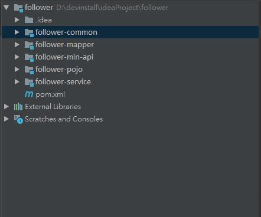
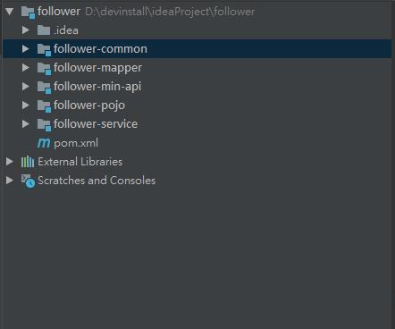

一直都是在用idea搭建单项目的工程,一方面是项目需要也是想要学习一下,于是用idea搭建一个聚合的项目.
idea搭聚合项目跟eclipse还是有一些区别的,使用的过程中也是遇到了不少坑,解决了之后记录一下,希望对刚想搭建聚合项目的朋友有所帮助.
项目主要的层次为common-pojo-mapper-service-api这样的形式的.

一直都是在用idea搭建单项目的工程,一方面是项目需要也是想要学习一下,于是用idea搭建一个聚合的项目.
idea搭聚合项目跟eclipse还是有一些区别的,使用的过程中也是遇到了不少坑,解决了之后记录一下,希望对刚想搭建聚合项目的朋友有所帮助.
项目主要的层次为common-pojo-mapper-service-api这样的形式的.

在项目的过程中 web前台出现了一个状态 就是a标签没有效果,不能点击不能跳转.然后找了一下原因 并附上解决办法.
导致<a>标签不能使用的原因是因为,在你放<a>标签的div的上层有其他的div遮挡住了.导致你不能点击到你的<a>标签,所以首先要让自己能
点到<a>标签就可以.
第一种方式 可以通过z-index的方式来解决,把你遮挡住标签的div放到下边,就是在你上层div中添加一条css属性
1
z-index:-1
<!--more-->
但是`z-index`属性是必须在position为`absolute` `relative` `fixed`的情况下才可以使用.
而且在我的项目中,我的上级div也是有`<a>`标签的.使用z-index属性之后,上级div中的'<a>'标签页不能使用了.
所以需要修改上级div大小,并修改相应的padding和margin属性.
这个就需要根据实际情况调整.但是是可以保证每个div中的标签都可以使用的.
今天在做项目是时候发现了一个问题
数据库可以查询到数据 但是在后台获取的是null
上网查了一下原因 最后发现是因为mybatis.xml配置的问题
可以自己新建一个xml文件 加入1
2
3
4
5
6<?xml version="1.0" encoding="utf-8"?>
<!DOCTYPE configuration PUBLIC "-//mybatis.org//DTD Config 3.0//EN"
"http://mybatis.org/dtd/mybatis-3-config.dtd">
<configuration>
</configuration
之前在测试了 一对一的方式后
又测试了一下一对多的方式,具体的关系为.一个班级有一个老师有很多学生.
在数据库中新建学生表 并存入数据.1
2
3
4
5
6
7
8
9
10
11
12create table orm_student(
s_id int identity(14301101,1) primary key ,
s_name varchar(20),
class_id int
)
insert into orm_student values('张三',1401)
insert into orm_student values('李四',1401)
insert into orm_student values('赵武',1401)
insert into orm_student values('刘能',1401)
insert into orm_student values('王大麻',1401)
insert into orm_student values('王心',1402)
然后写好对应的实体类就行了,因为是查询class来搜索到所有学生的.
所以在测试时没有写学生相关的mapper文件等.并且要在class的实体类中,添加一条1
private List<Student> studentList;
用来查询学生的信息.
因为项目要做地图关联的功能,其中会有关联查询,今天就在自己电脑上先做了一个测试 是学生 老师 班级这样的一个关联查询.
先写的是老师和班级的查询 在这里是一个老师对应一个班级 要通过班级的id把这个班级的名称和教师的名称显示出来.
在数据库中先建立教师表和班级表.1
2
3
4
5
6--关联查询测试 班级表
create table orm_class(
c_id integer primary key,
c_name NVARCHAR(20),
t_id integer
)
1 | -- 关联查询测试 教师表 |
最近的一个项目中 涉及到了一个功能 是关于地图的数据联动
所以就需要用ajax来异步更新数据.
之前搭了一个springboot的项目.所以就用在这个项目上进行了一次尝试.
记录一下整个的过程 ,
希望会对刚学习ajax的同学有所帮助.
前台的div中有一个数字 在前台获取到这个id 然后传到后台
后台获取到id为这个值得对象.
再将这个对象在前台展示出来.
在前台的div中写了一个数字1<div id="demo">1</div> 然后在js中通过 document.getEletmentById("demo").innerHTML;
获取到了div中的值.然后在ajax的data的text标签中,然后后台通过httpServletRequest.getParameter("text")这个id,通过之前写过的跟去id获取对象的方法.
来获取这个对象,放到list中,在通过遍历写出来.后台先是报了一个错误.因为通过httpServletRequest.getParameter获取到的是一个String值.但是我的id是一个
int值,解决的办法是通过”integer.valueof()”将string类型转换成了integer.然后运行时报了一个”null”的错误.开始以为是空指针的错误,后来发现是因为integer.valueof
的字符串是空值会报的错.因为不确定是因为转型的原因还是取值问题,所以在转型的语句上边加了一个sout的语句.做了一个输出.并且在前台取值后加了一个alert.
然后取消转型 直接sout获取到的值.运行后发现前台没问题.后台输出了一个null后,输出了正常获取到的id.
考虑到可能是加载的问题.
公司最近写的项目需要联动 然后要用到ajax的技术,虽然以前在项目中用到过ajax 但是没有很好地理解
晚上的时候 仔细的想了一想 ajax的用法 在这里记录一下
因为之前写过echarts 后台传值的时候是通过ajax传的,个人觉得后台传值还是比较简单的.
理论上来说,就是通过sql语句在数据库中进行取值后 将取到的值放在list
在controller 把 list放到model中 然后通过遍历 取出数值. 然后可以根据实际项目的需要
将不同的属性放在不同的数组中,
再在对应的位置将内容取出来.
Hive是建立在Hadoop上的 是针对MapReduce开发的技术 Hive的组件主要分为两类: 客户端组件和服务端组件. 下面我们对这些组件进行逐一说明.
1) 客户端组件
CLI: Command Line Interface,命令行接口 最常用的客户端组件就是CLI CLI启动的时候 会同时启动一个Hive副本
Client: Client是Hive的客户端 用于连接Hive Server 在启动Client模式的时候 需要指出Hive Server 所在的节点 , 并且在该节点启动Hive Server
图4-2 所示的结构图没有写上 Thrift客户端 但是Hive架构的许多客户端接口 都是建立在Thrift客户端上的 包括JDBC 和 ODBC接口
Web GUI : Hive 客户端 提供 了一种通过网页访问Hive 所提供的服务的方式 这个接口duiying`Hive的HWI(Hive Web Interface) 组件 使用前要启动HWI服务
Hive并不是数据库,从结构上看,Hive和数据库除了有类似的查询语言,再无类似之处.数据库可以用在Online的应用中,但是Hive是为了数据仓库而设计的